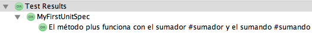
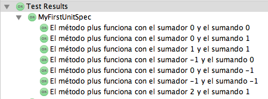

Los tests de software se pueden definir como el proceso empleado para comprobar la corrección de un programa informático y se puede considerar como una parte más en el proceso del control de calidad.
BuildConfig.groovy
grails.project.dependency.resolution = {
repositories {
grailsCentral()
mavenCentral()
}
dependencies {
test "org.spockframework:spock-grails-support:0.7-groovy-2.0"
}
plugins {
test(":spock:0.7") {
exclude "spock-grails-support"
}
}
}
grails test-app
Extienden spock.lang.Specification
package es.ua.expertojava.todo
import spock.lang.Specification
class MyFirstTest extends Specification {
def "El operador suma funciona correctamente"() {
expect:
10 == 2 + 8
and:
10 == 0 + 10
and:
10 == 10 + 0
}
}
def "El método plus de los números funciona correctamente"() {
when:
def result = 10.plus(2)
then:
result == 12
}
@Unroll
def "El método plus funciona con el sumador #sumador y el sumando #sumando"() {
when:
def result = sumador.plus(sumando)
then:
result == resultadoEsperado
where:
sumador | sumando | resultadoEsperado
0 | 0 | 0
0 | 1 | 1
1 | 1 | 2
-1 | 0 | -1
0 | -1 | -1
-1 | -1 | -2
2 | 1 | 3
}


@Unroll
def "El método plus funciona con el sumador #sumador y el sumando #sumando utilizando listas"() {
when:
def result = sumador.plus(sumando)
then:
result == resultadoEsperado
where:
sumador << [0,0,1,-1,0,-1,2]
sumando << [0,1,1,0,-1,-1,1]
resultadoEsperado << [0,1,2,-1,-1,-2,3]
}
def "El método para concatenar cadenas añade un signo + entre las cadenas concatenadas"() {
given:
String.metaClass.concat = { String c ->
"${delegate}+${c}"
}
expect:
"cadena1".concat("cadena2") == "cadena1+cadena2"
cleanup:
String.metaClass = null
}
package es.ua.expertojava.todo
class Category {
String name
String description
static hasMany = [todos:Todo]
static constraints = {
name(blank:false)
description(blank:true, nullable:true, maxSize:1000)
}
String toString(){
name
}
}
package es.ua.expertojava.todo
import grails.test.mixin.TestFor
import spock.lang.Specification
import spock.lang.Unroll
/**
* See the API for {@link grails.test.mixin.domain.DomainClassUnitTestMixin} for usage instructions
*/
@TestFor(Category)
class CategorySpec extends Specification {
def setup() {
}
def cleanup() {
}
...
}
def "El nombre de la categoría no puede ser la cadena vacía"() {
given:
def c1 = new Category(name:"")
when:
c1.validate()
then:
c1?.errors['name']
}
def "Si el nombre no es la cadena vacía, este campo no dará problemas"() {
given:
def c1 = new Category(name:"algo")
when:
c1.validate()
then:
!c1?.errors['name']
}
def "Si la descripción es la cadena vacía, este campo no dará problemas"() {
given:
def c1 = new Category(description:"")
when:
c1.validate()
then:
!c1?.errors['description']
}
def "La descripción de la categoría puede ser null"() {
given:
def c1 = new Category(description: null)
when:
c1.validate()
then:
!c1?.errors['description']
}
@Unroll
def "Si la descripción tiene menos de 1001 caracteres, no dará problemas"() {
given:
def c1 = new Category(description: "a"*characters)
when:
c1.validate()
then:
!c1?.errors['description']
where:
characters << [0,1,999,1000]
}
@Unroll
def "Si la descripción tiene más 1000 caracteres, dará problemas"() {
given:
def c1 = new Category(description: "a"*characters)
when:
c1.validate()
then:
c1?.errors['description']
where:
characters << [1001,1002]
}
def "La instancia de Categoría devuelve su nombre por defecto"() {
expect:
new Category(name:"The category name").toString() == "The category name"
}
package es.ua.expertojava.todo
import grails.test.mixin.*
import spock.lang.*
@TestFor(CategoryController)
@Mock(Category)
class CategoryControllerSpec extends Specification {
def populateValidParams(params) {
assert params != null
// TODO: Populate valid properties like...
//params["name"] = 'someValidName'
}
...
def populateValidParams(params) {
assert params != null
params["name"] = 'Category name'
}
grails test-app CategoryControllerSpec unit:
package es.ua.expertojava.todo
import grails.test.mixin.*
import spock.lang.*
@TestFor(CategoryController)
@Mock(Category)
class CategoryControllerSpec extends Specification {
def populateValidParams(params) {
assert params != null
params["name"] = 'Category name'
}
...
}
void "Test the index action returns the correct model"() {
when:"The index action is executed"
controller.index()
then:"The model is correct"
!model.categoryInstanceList
model.categoryInstanceCount == 0
}
void "Test the create action returns the correct model"() {
when:"The create action is executed"
controller.create()
then:"The model is correctly created"
model.categoryInstance!= null
}
void "Test the save action correctly persists an instance"() {
when:"The save action is executed with an invalid instance"
request.contentType = FORM_CONTENT_TYPE
request.method = 'POST'
def category = new Category()
category.validate()
controller.save(category)
then:"The create view is rendered again with the correct model"
model.categoryInstance!= null
view == 'create'
when:"The save action is executed with a valid instance"
response.reset()
populateValidParams(params)
category = new Category(params)
controller.save(category)
then:"A redirect is issued to the show action"
response.redirectedUrl == '/category/show/1'
controller.flash.message != null
Category.count() == 1
}
void "Test that the show action returns the correct model"() {
when:"The show action is executed with a null domain"
controller.show(null)
then:"A 404 error is returned"
response.status == 404
when:"A domain instance is passed to the show action"
populateValidParams(params)
def category = new Category(params)
controller.show(category)
then:"A model is populated containing the domain instance"
model.categoryInstance == category
}
void "Test that the edit action returns the correct model"() {
when:"The edit action is executed with a null domain"
controller.edit(null)
then:"A 404 error is returned"
response.status == 404
when:"A domain instance is passed to the edit action"
populateValidParams(params)
def category = new Category(params)
controller.edit(category)
then:"A model is populated containing the domain instance"
model.categoryInstance == category
}
void "Test that the delete action deletes an instance if it exists"() {
when:"The delete action is called for a null instance"
request.contentType = FORM_CONTENT_TYPE
request.method = 'DELETE'
controller.delete(null)
then:"A 404 is returned"
response.redirectedUrl == '/category/index'
flash.message != null
when:"A domain instance is created"
response.reset()
populateValidParams(params)
def category = new Category(params).save(flush: true)
then:"It exists"
Category.count() == 1
when:"The domain instance is passed to the delete action"
controller.delete(category)
then:"The instance is deleted"
Category.count() == 0
response.redirectedUrl == '/category/index'
flash.message != null
}
def includeJs = {attrs ->
out << ""
}
void "La etiqueta includeJs devuelve una referencia a la librería javascript pasada por parámetro"() {
expect:
applyTemplate('
void "El pie de página se renderiza correctamente"() {
when:
def result = render(template: '/common/footer')
then:
result == "\n" +
" © 2015 Experto en Desarrollo de Aplicaciones Web con JavaEE y Javascript
\n" +
" Aplicación Todo creada por Francisco José García Rico (21.542.334F)\n" +
""
}
package es.ua.expertojava.todo
import grails.test.mixin.TestFor
import spock.lang.Specification
/**
* See the API for {@link grails.test.mixin.services.ServiceUnitTestMixin} for usage instructions
*/
@TestFor(TodoService)
class TodoServiceSpec extends Specification {
def setup() {
}
def cleanup() {
}
void "test something"() {
}
}
def getNextTodos(Integer days, params) {
Date now = new Date(System.currentTimeMillis())
Date to = now + days
Todo.findAllByDateBetween(now, to, params)
}
void "El método getNextTodos devuelve los siguientes todos de los días pasado por parámetro"() {
given:
def todoDayBeforeYesterday = new Todo(title:"Todo day before yesterday", date: new Date() - 2 )
def todoYesterday = new Todo(title:"Todo yesterday", date: new Date() - 1 )
def todoToday = new Todo(title:"Todo today", date: new Date())
def todoTomorrow = new Todo(title:"Todo tomorrow", date: new Date() + 1 )
def todoDayAfterTomorrow = new Todo(title:"Todo day after tomorrow", date: new Date() + 2 )
def todoDayAfterDayAfterTomorrow = new Todo(title:"Todo day after tomorrow", date: new Date() + 3 )
and:
mockDomain(Todo,[todoDayBeforeYesterday, todoYesterday, todoToday, todoTomorrow, todoDayAfterTomorrow, todoDayAfterDayAfterTomorrow])
and:
def nextTodos = service.getNextTodos(2,[:])
expect:
Todo.count() == 6
and:
nextTodos.containsAll([todoTomorrow, todoDayAfterTomorrow])
nextTodos.size() == 2
and:
!nextTodos.contains(todoDayBeforeYesterday)
!nextTodos.contains(todoToday)
!nextTodos.contains(todoYesterday)
!nextTodos.contains(todoDayAfterDayAfterTomorrow)
}
@Unroll
void "El método printIconFromBoolean devuelve una ruta a una imagen"() {
when:
def output = applyTemplate('
@Unroll
void "El método printIconFromBoolean devuelve una ruta a una imagen"() {
given:
def assetsTagLib = Mock(AssetsTagLib)
tagLib.metaClass.asset = assetsTagLib
when:
def output = applyTemplate('
@Ignore
def "my feature"() { ... }
@Ignore
class MySpec extends Specification { ... }
@Ignore(reason = "TODO")
def "my feature"() { ... }
def "I'll be ignored"() { ... }
@IgnoreRest
def "I'll run"() { ... }
def "I'll also be ignored"() { ... }
@IgnoreIf({ System.getProperty("os.name").contains("windows") })
def "I'll run everywhere but on Windows"() { ... }
@Requires({ os.windows })
def "I'll only run on Windows"() { ... }
Respeta el orden de los tests
@Timeout(5)
def "I fail if I run for more than five seconds"() { ... }
@Timeout(value = 100, unit = TimeUnit.MILLISECONDS)
def "I better be quick" { ... }
@Timeout(10)
class TimedSpec extends Specification {
def "I fail after ten seconds"() { ... }
def "Me too"() { ... }
@Timeout(value = 250, unit = MILLISECONDS)
def "I fail much faster"() { ... }
}
@Stepwise
class FooSpec extends Specification {
@ConfineMetaClassChanges
def "I run first"() {
when:
String.metaClass.someMethod = { delegate }
then:
String.metaClass.hasMetaMethod('someMethod')
}
def "I run second"() {
when:
"Foo".someMethod()
then:
thrown(MissingMethodException)
}
}
@Title("This is easy to read")
class ThisIsHarderToReadSpec extends Specification {
...
}
@Narrative(""""
As a user
I want foo
So that bar
""")
class GiveTheUserFooSpec() { ... }